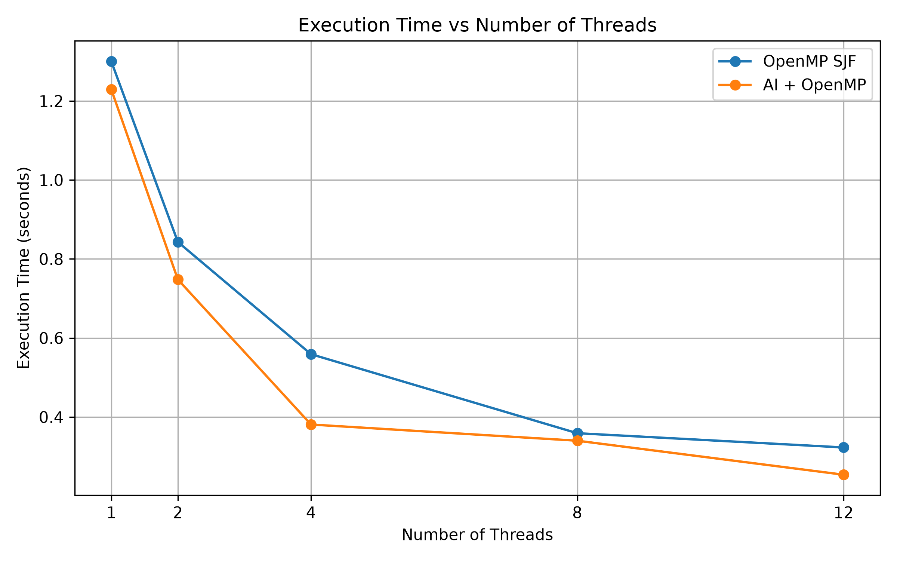
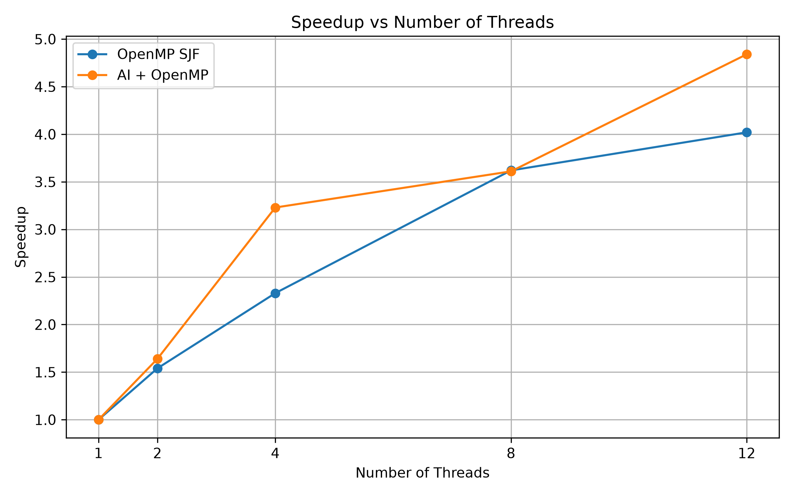
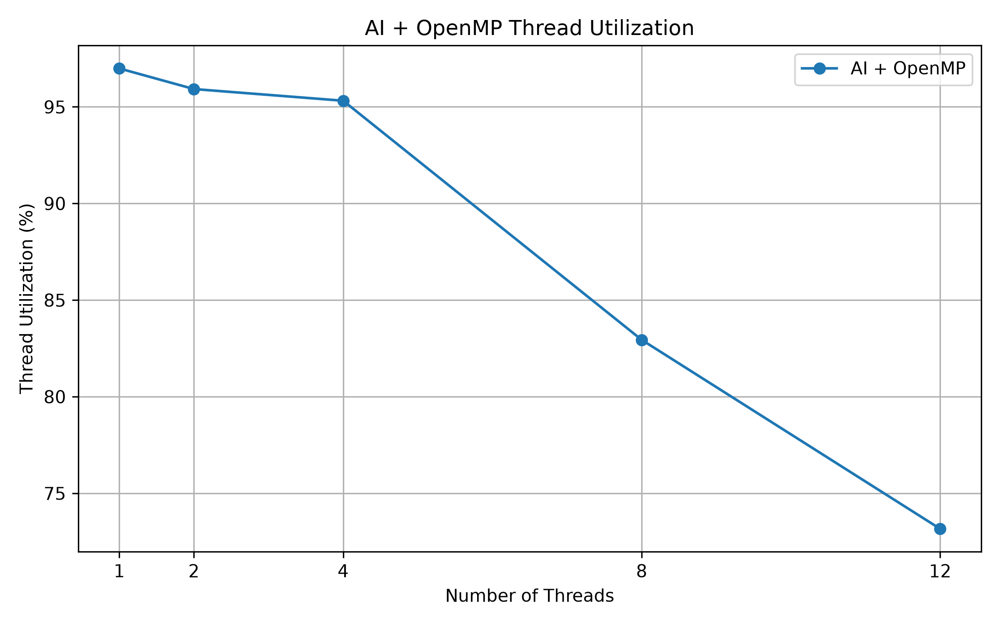
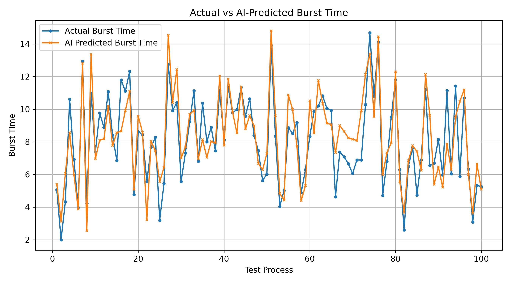

Best Execution Time
--
Calculating...AI Prediction Error
--
Mean absolute errorBest Speedup
4.84×
AI + OpenMPTotal Processes
100
Test workloadScheduler Comparison
| Scheduler | Threads | Execution Time | Speedup | Efficiency | Utilization |
|---|
Execution Time vs Threads

Speedup vs Threads

Thread Utilization

Actual vs Predicted Burst Time

Process Scheduling Simulator
Add processes and use AI-predicted burst times to determine their scheduling order.
| Process | CPU % | Memory | I/O | Type | Priority | Predicted Burst |
|---|
Scheduling Strategy Comparison
FCFS
First Come First Serve
SJF
Shortest Job First
AI + OpenMP
AI burst prediction with parallel execution
Parallel Execution Timeline
Simulated allocation of scheduled processes across OpenMP worker threads.
AI Burst-Time Predictor
Enter process characteristics to predict the required CPU burst time using the trained Random Forest model.